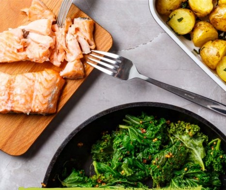

Read the entire recipe from start to finish. Trust us! You'll be more familiar with the steps and cooking the dish will be a METHOD stroll in the park. Before you begin give the vegetables a quick rinse.
Slice the baby potatoes in half. Mix them with a little olive oil, season with salt and pepper, and place on a roasting tray and cook in the oven for 15 minutes.
After 15 minutes place the salmon on top of the potatoes and bake for a further 10 minutes. While the salmon is cooking move on to the next step.
Chop some mint and set it aside.
Pull the kale leaves away from the hard stalk. Put some oil in a pan on a medium heat. Add the kale and some lemon juice to the pan. Allow the kale to wilt down. Stir in the mustard. Season with some salt & pepper.
Once the fish is cooked, place the kale mixture on the plate with the salmon on top. Toss the potatoes in the chopped mint and serve alongside the fish.